Configuration :
Plan d'adressage :
Les manipulations seront effectuées avec un compte utilisateur ayant les droits sudoers (olivier).
sudo nano /etc/hosts
Ajoutez le nom du serveur dns-2 à la ligne 127.0.1.1 :
Exemple : 127.0.1.1 dns-2
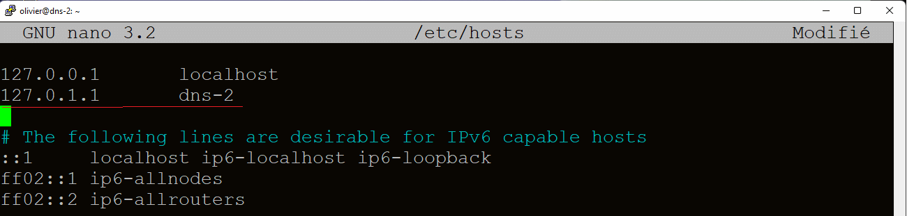Assurez-vous que le système est à jour :
sudo apt-get update
Installez le service bind9 :
sudo apt-get install bind9
Sauvegardez le fichier named.conf.local :
sudo cp /etc/bind/named.conf.local /etc/bind/named.conf.local.saved
Éditez et modifiez le fichier named.conf.local :
sudo nano /etc/bind/named.conf.local
Ajoutez les déclarations de la zone de recherche et de la zone de recherche inversée :
zone "m2i.lan" {
type master;
file "/etc/bind/db.m2i.lan";
};
zone "74.168.192.in-addr.arpa" {
type master;
file "/etc/bind/db.74.168.192.in-addr.arpa";
};
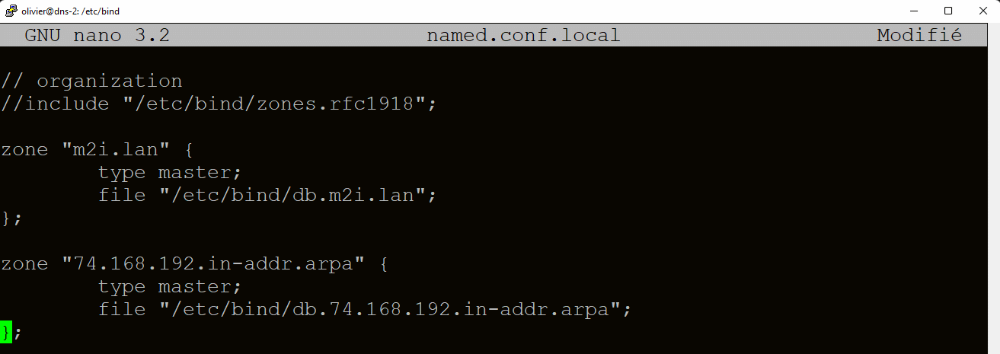
Éditez le fichier named.conf.options :
sudo nano /etc/bind/named.conf.options
Décommentez la ligne "forwarders" et entrez l'adresse 8.8.8.8 :
forwarders { 8.8.8.8; };
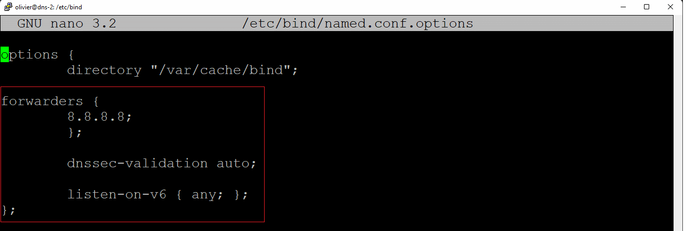
Créez une copie du fichier db.local et renommez-le en db.m2i.lan :
sudo cp /etc/bind/db.local /etc/bind/db.m2i.lan
Éditez et modifiez le fichier db.m2i.lan :
sudo nano /etc/bind/db.m2i.lan
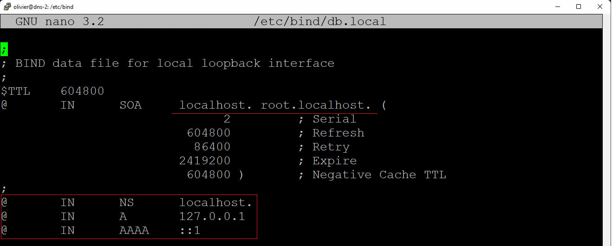
Ajoutez les lignes suivantes :
$ORIGIN m2i.lan.
@ IN SOA dns-2.m2i.lan. root.m2i.lan.
@ IN NS dns-2.m2i.lan.
dns-2 IN A [adresse IP de dns-2]
dhcp-1 IN A [adresse IP de dhcp-1]
Note : NS représente le serveur de noms et A représente l'hôte IPv4.
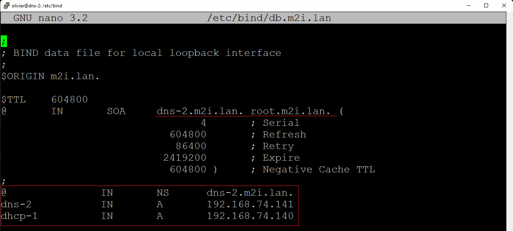Créez une copie du fichier db.127 et renommez-le en db.74.168.192.in-addr.arpa :
sudo cp /etc/bind/db.127 /etc/bind/db.74.168.192.in-addr.arpa
Éditez et modifiez le fichier db.74.168.192.in-addr.arpa :
sudo nano /etc/bind/db.74.168.192.in-addr.arpa
Ajoutez la ligne $ORIGIN 74.168.192.in-addr.arpa. :
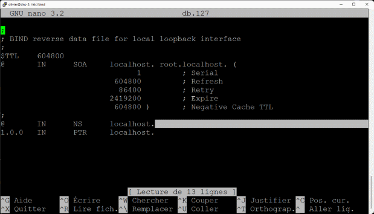$ORIGIN 74.168.192.in-addr.arpa.
Modifiez les 3 dernières lignes :
@ IN NS dns-2.m2i.lan.
[dernier octet de l'adresse IP] IN PTR dns-2.m2i.lan.
[dernier octet de l'adresse IP] IN PTR dns-2.m2i.lan.
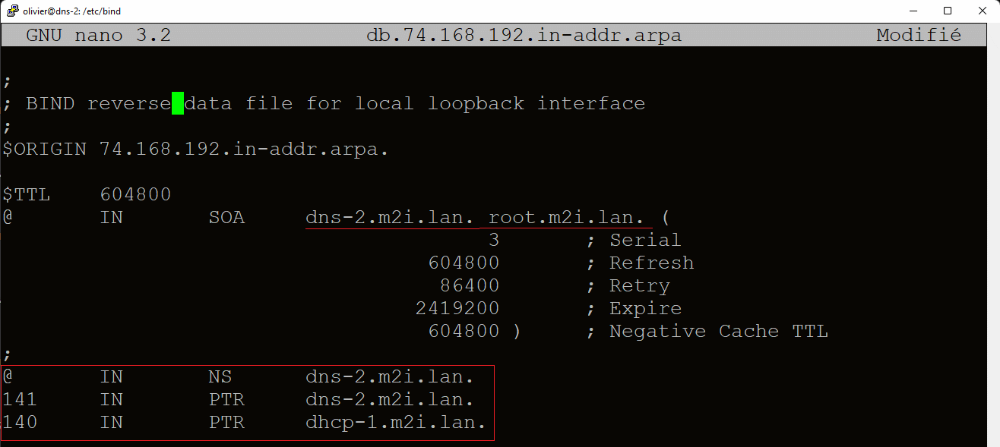
Éditez le fichier /etc/resolv.conf :
sudo nano /etc/resolv.conf
Modifiez les champs "domain", "search" et "nameserver" :
domain m2i.lan
search m2i.lan
nameserver [adresse IP dns-2]
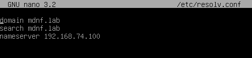
Redémarrez le serveur dns-2 :
sudo reboot
Testez la connexion en effectuant un ping vers le serveur dhcp-1 :
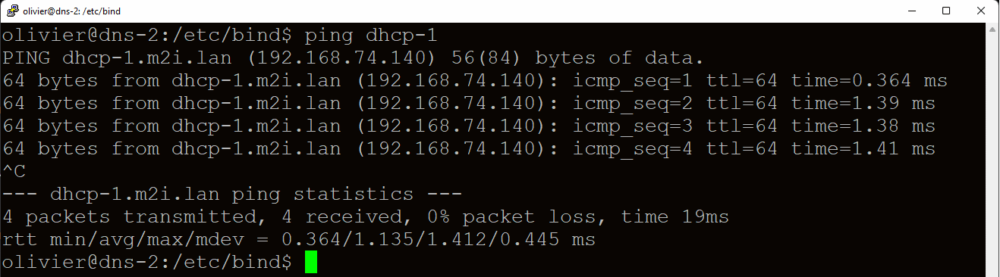ping dhcp-1
Le serveur dhcp-1 (192.168.74.140) devrait répondre, ce qui signifie que le nom est bien résolu.
Depuis le client win10 :
ping dhcp-1.m2i.lan
Supprimez la configuration DNS fixe sur le client win10 et redémarrez-le.
Sur le serveur dhcp-1 :
sudo nano /etc/dhcp/dhcpd.conf
Décommentez l'option "domain-name" et spécifiez le domaine "m2i.lan".
Remplacez la ligne "option domain-name-servers 8.8.8.8;" par :
option domain-name-servers 192.168.74.141;
Redémarrez le serveur :
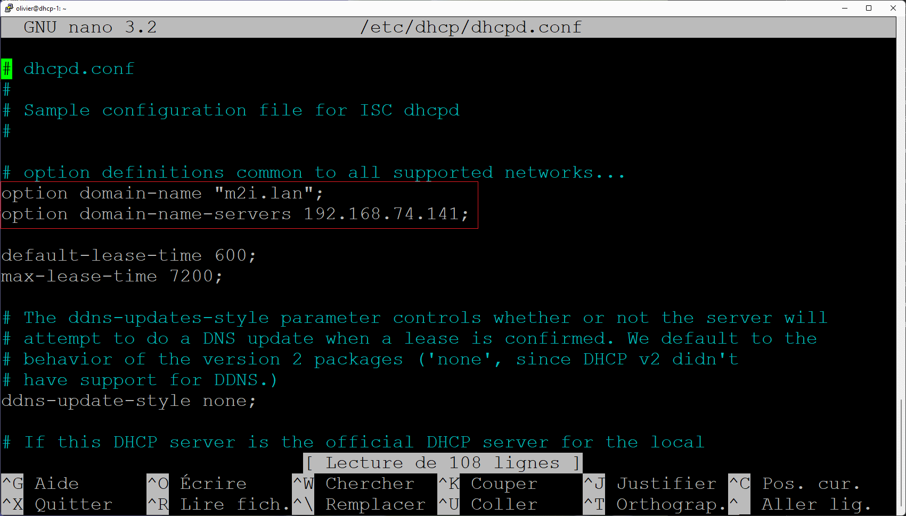sudo reboot
Retournez sur le client win10 :
ipconfig /release
ipconfig /renew
ping dhcp-1.m2i.lan
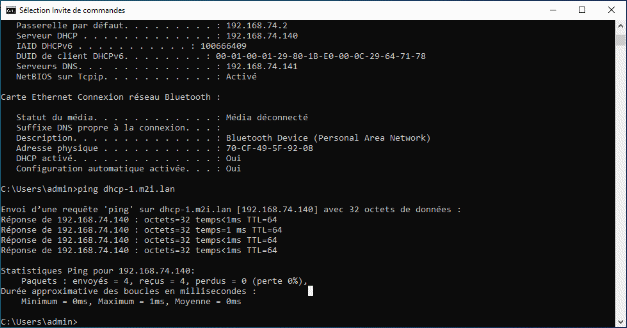
Pour vérifier la configuration, consultez les fichiers /etc/resolv.conf :
domain m2i.lan
search m2i.lan
nameserver [adresse IP du dns-2]